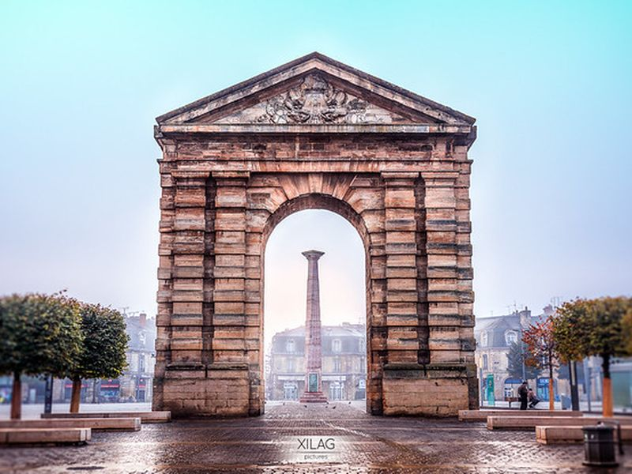
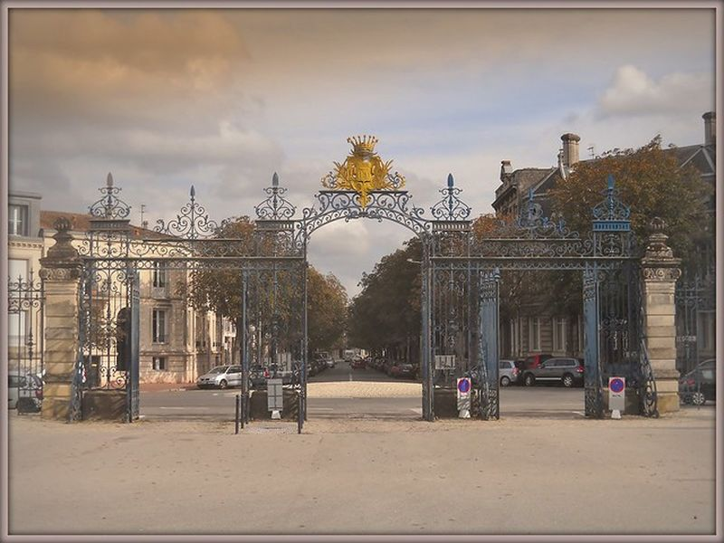

Explore Bordeaux
A Brief History
Bordeaux developed as the Roman port of Burdigala on the Garonne and later became a major Atlantic trading city under English rule from 1154 to 1453. Merchants and royal administrators financed neo-classical quays, the Place de la Bourse, and wine-export infrastructure that still shapes the city's economy. After the Revolution it became the capital of Gironde, and its 18th-century urban ensemble was inscribed as a UNESCO World Heritage site in 2007.
Attractions Map
Top Sights & Activities

Monument aux Girondins
The Monument aux Girondins stands at the west end of Place des Quinconces, completed in 1902 to honour Girondin deputies executed during the Terror. Its column rises above bronze fountains and allegorical groups representing the Republic, commerce, and the Garonne. The monument anchors Bordeaux's largest public esplanade facing the river.

Place des Quinconces
Place des Quinconces is Bordeaux's principal esplanade between the city centre and the Garonne, laid out in the early 19th century on former fortifications. Tree-lined paths frame the Monument aux Girondins and seasonal fairs, forming the main civic open space west of the old town.

Opéra National de Bordeaux - Grand-Théâtre
The Grand-Théâtre de Bordeaux opened in 1780 and remains the home of the Opéra National de Bordeaux. Victor Louis designed its neo-classical colonnade and elliptical auditorium on Place de la Comédie. Guided visits explain the building's role in 18th-century urban renewal and present-day opera programming.

Place du Parlement
Place du Parlement is a small square in Bordeaux's Saint-Pierre quarter, named for the former parliament of Guyenne abolished in 1790. Baroque facades and outdoor cafés line the space a short walk from the Garonne quays, preserving the scale of the 18th-century merchant city.

Place de la Bourse
Place de la Bourse was built from 1730 to 1755 as Bordeaux's royal exchange, designed by Ange-Jacques Gabriel with a semicircular quay opening to the Garonne. The uniform stone facades symbolised the city's Atlantic trade wealth and face the Miroir d'eau on the opposite pavement.

Miroir d'eau
The Miroir d'eau is a shallow reflecting pool installed in 2006 between the Place de la Bourse and the Garonne quay. Periodically flooded to a few millimetres depth, it mirrors Gabriel's facades and is one of the largest contemporary water mirrors in the world. Children and photographers gather on the granite rim when the jets cycle on summer evenings.

Porte Cailhau
Porte Cailhau is a fortified gate built around 1495 to celebrate the victory of Charles VIII at Fornovo. Its flamboyant Gothic tower once formed part of the medieval city wall beside the Garonne. Visitors can climb to a viewing room overlooking the river and old quays.

Porte de Bourgogne
Porte de Bourgogne is a triumphal arch completed in 1755 at the end of the cours Victor Hugo, marking the former city gate toward Burgundy. Nicolas-Marie Potain's design frames the axis linking the stone bridge with the 18th-century extension of Bordeaux south of the Garonne.

Grosse Cloche
The Grosse Cloche is a 15th-century belfry spanning a city gate in the Saint-Éloi quarter. Its twin conical roofs and large bell once regulated municipal curfews and public alarms. The structure is one of the last visible fragments of Bordeaux's medieval ramparts.

Tour Pey Berland
Tour Pey-Berland is a detached Gothic bell tower begun in 1440 beside Cathédrale Saint-André. Named for Archbishop Pey Berland, it houses the cathedral's bells away from the main vault. Visitors can climb the tower for views over the old town and Garonne valley.

Cathédrale Saint-André de Bordeaux
Cathédrale Saint-André de Bordeaux was largely built in Gothic style from the 12th to 15th centuries on an earlier Romanesque church. Royal marriages and French coronation ceremonies linked the cathedral to Aquitaine's rulers. The nave remains open for worship and visits beside the separate Pey-Berland tower.

Porte Dijeaux
Porte Dijeaux was one of the principal gates through Bordeaux's 18th-century extension toward Périgord. The name recalls the Roman road toward Dijeaux, and the surviving arch marks the transition from the compact medieval core to Haussmann-era boulevards south of the cathedral quarter.

Palais Gallien
The Palais Gallien preserves the remains of a 3rd-century Roman amphitheatre in Bordeaux's Saint-Seurin district. Part of the cavea wall still stands in a residential quarter, recalling Burdigala's role as a provincial capital of Aquitaine under the Roman Empire.

Jardin public
The Jardin public was opened in 1746 as Bordeaux's first landscaped public garden during the Enlightenment. English-style paths, mature trees, and a small natural-history museum pavilion occupy grounds that once belonged to the intendant's residence north of the old walls.

Bassins des Lumières
Les Bassins des Lumières occupy a Second World War submarine base in Bordeaux's Bacalan dockland. Converted in 2020, the flooded dry docks host large-scale projected art installations on the concrete walls. The site forms part of the regenerated waterfront north of the historic centre.

Pont Jacques Chaban Delmas
The Pont Jacques-Chaban-Delmas is a vertical-lift bridge completed in 2013 over the Garonne in Bordeaux. Named for the former mayor and prime minister, its central span rises to allow passage of ocean-going vessels to the city's commercial docks while carrying road traffic between Bacalan and the Bastide.

Parc de Bourran
Parc de Bourran is a 19th-century public park in the Caudéran district west of central Bordeaux. Lawns, a lake, and tree-lined paths occupy grounds once attached to a suburban villa, offering a quieter green space away from the UNESCO-classified riverfront.

Porte d'Aquitaine
Porte d'Aquitaine is a modern square and tram hub at the southern end of the cours Victor-Hugo. The name recalls the historic gate toward Aquitaine, and the open plaza connects the 18th-century grid with residential quarters south of the Grosse Cloche.

Parc Bordelais
Parc Bordelais was laid out in the late 19th century on former vineyard land in the Saint-Augustin quarter. Playgrounds, a small lake, and shaded alleys make it one of the city's largest neighbourhood parks west of the historic centre. Local families use the paths and sports fields throughout the year.